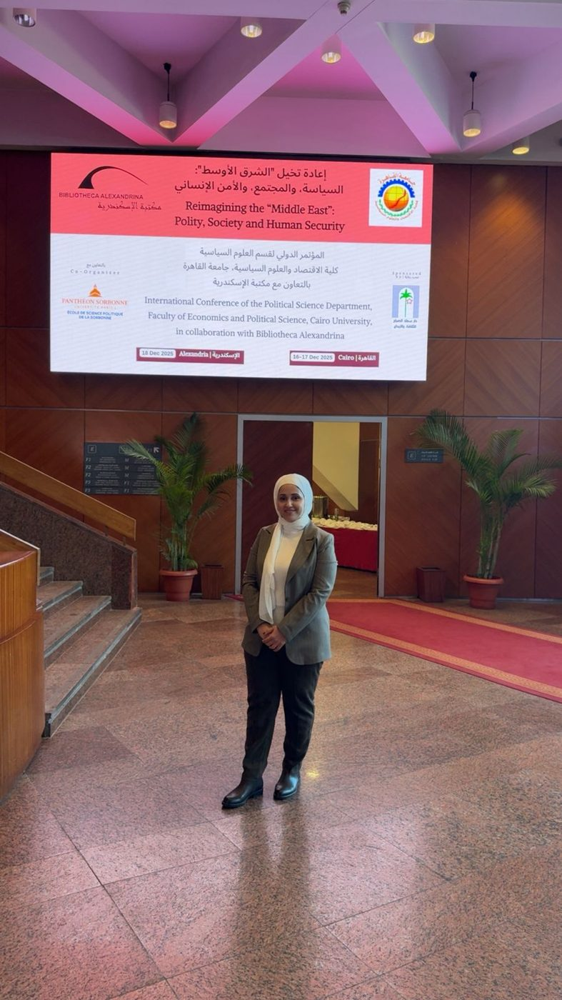
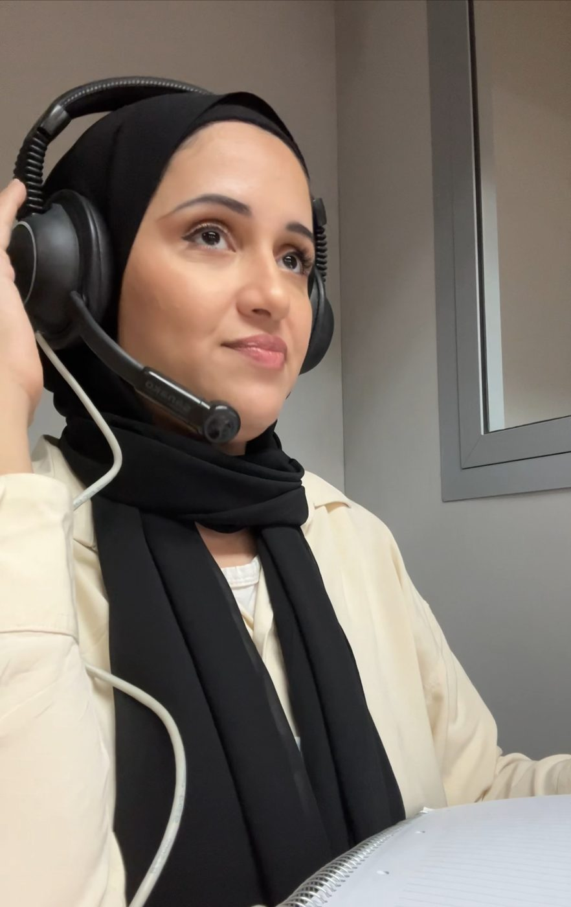
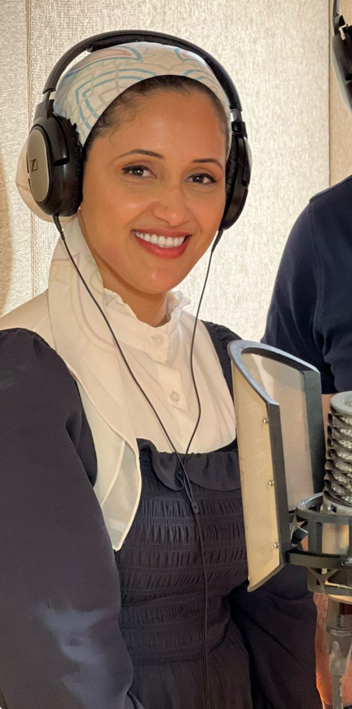
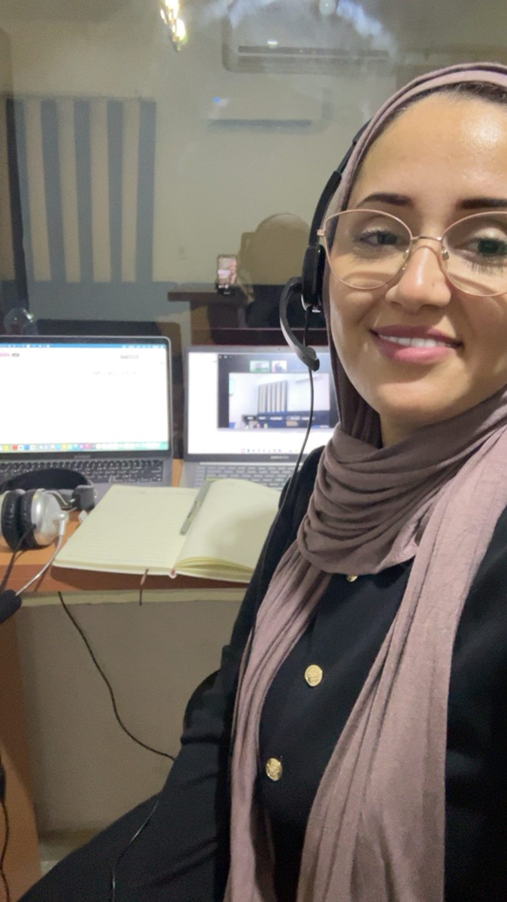
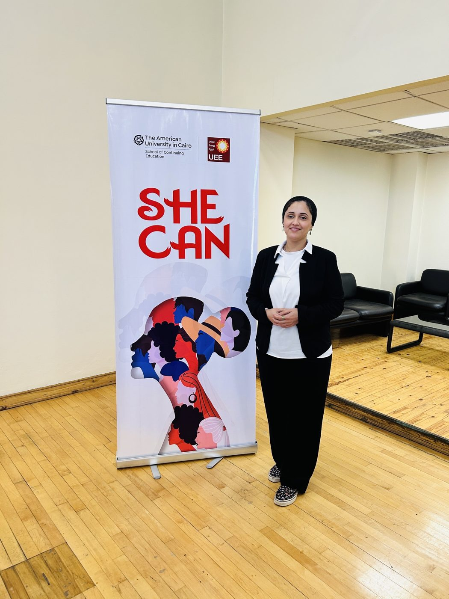
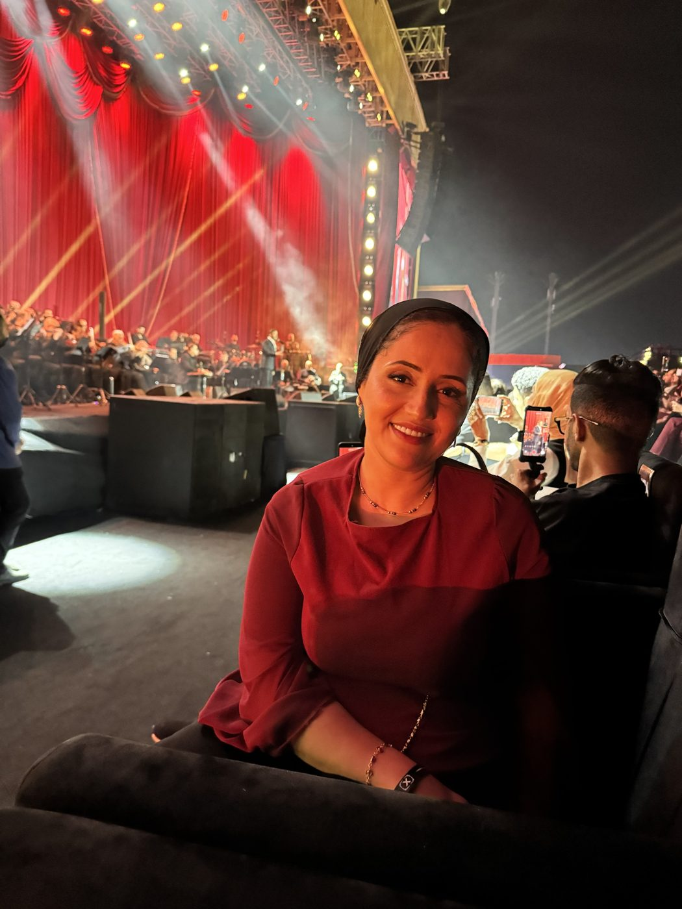
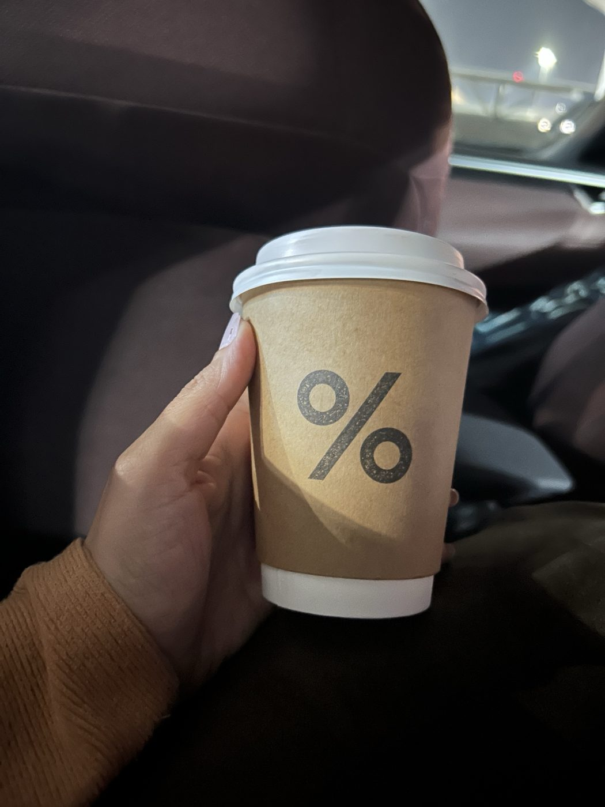
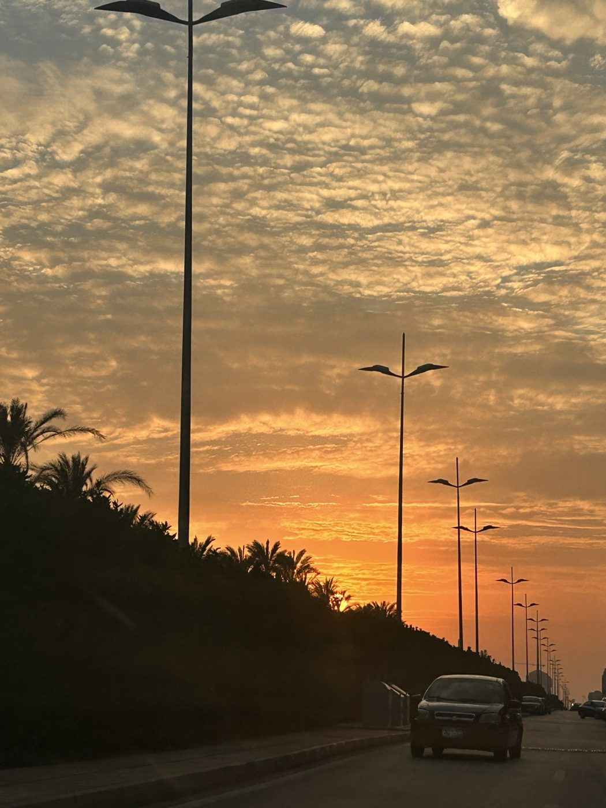
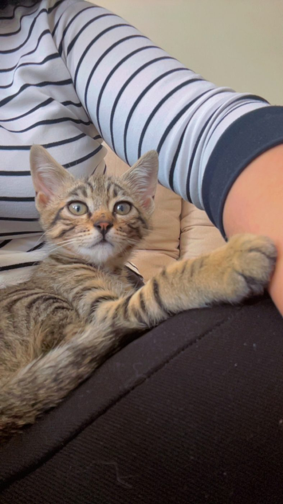
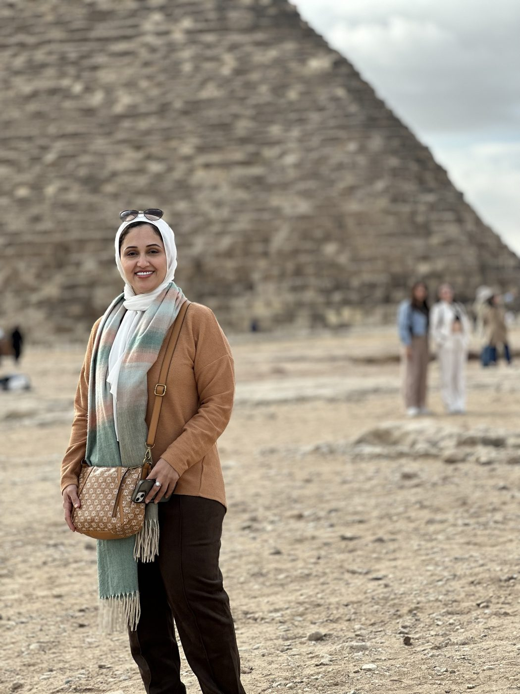

مروة جودة مترجمة فورية من العربية إلى الإنجليزية وبالعكس، مقيمة في القاهرة. تعمل في الترجمة الفورية والتتابعية في المؤتمرات والاجتماعات رفيعة المستوى والمشاورات، مع تركيز على السياسة والشؤون الدولية والأمن الإنساني وقضايا اللاجئين. وهي حاصلة على الدبلومة المهنية في الترجمة الفورية والتتابعية من الجامعة الأمريكية بالقاهرة.
وقبل المقصورة، أمضت ثلاثة عشر عامًا في الترجمة والمراجعة لعلامات تجارية عالمية من الإنجليزية والألمانية إلى العربية، وتعمل كذلك معلّقةً صوتية باللغة العربية. وصوتها مدرَّب على البث، وترحب بالعمل في التلفزيون والبرامج المباشرة والفعاليات الرياضية.
الترجمة الفورية والتحريرية
الترجمة الفورية للمؤتمرات · عربي ⇄ إنجليزي
فورية وتتابعية، حضوريًا أو عن بُعد. ولكل فعالية مسرد مصطلحات خاص بها يُعدّ من جدول الأعمال وأوراق المتحدثين. وتظل المستندات سرية، مع الترحيب بتوقيع اتفاقيات عدم الإفصاح.
الترجمة التحريرية والتعليق الصوتي · إنجليزي، ألماني ← عربي
ترجمة ومراجعة وتحرير لاحق للترجمة الآلية وترجمة للشاشة، للوكالات والعلامات التجارية، في مجالات التسويق والسيارات والمحتوى التقني وتقنية المعلومات والتعليم الإلكتروني. وصوت عربي بالفصحى أو باللهجة المصرية للإعلانات والسرد والتعليم الإلكتروني وأنظمة الرد الآلي، مع فريق من المعلقين والمعلقات وكتّاب المحتوى ومحرري الفيديو للمشروعات الأكبر.
أعمال مختارة
- 2026UNHCR · Global NGO Consultationsترجمة فورية من الإنجليزية إلى العربية لثلاث جلسات، من بينها كلمة المفوض السامي، تطوعًا، ونلتُ عنها شهادة تقدير من المفوضية في جنيف.
- 2025إعادة تصور الشرق الأوسط: السياسة والمجتمع والأمن الإنسانيمؤتمر دولي لكلية الاقتصاد والعلوم السياسية بجامعة القاهرة، في مكتبة الإسكندرية. من العربية إلى الإنجليزية.
- 2025–26أبحاث سوق لـ Kantar و IMRنحو 25 جلسة، حضوريًا وعن بُعد.
- 2025الاجتماع العام لموظفي Equinixترجمة فورية عن بُعد لندوة عالمية عبر الإنترنت.
وفي الترجمة التحريرية، كانت المترجمة المفضلة لحسابات منها BMW وDisneyland Paris وBeurer وHenkel وVestas وAtlas Copco وWeber وThe Estée Lauder Companies، عبر وكالات مثل LanguageWire وArablingo24 وPoliLingua.
التأهيل واللغات
- 2024الدبلومة المهنية في الترجمة الفورية والتتابعيةالجامعة الأمريكية بالقاهرة
- 2023الدبلومة التأسيسية في الترجمة التحريرية والفوريةالجامعة الأمريكية بالقاهرة
- 2025إدارة المؤتمرات والفعالياتالجامعة الأمريكية بالقاهرة، إضافةً إلى برنامج SHE CAN لرائدات الأعمال
- 2017–21تدريب على التعليق الصوتي والدوبلاجمن بينها برنامج «الحكواتي» في The Arabic Voice، حيث نالت لقب «نجمة الاحترافية»
- 2008ليسانس الألسن، قسم اللغة الألمانية واللغة الإنجليزيةكلية الألسن، جامعة عين شمس
اللغات
العربية لغة أم · الإنجليزية بمستوى C1 · الألمانية بمستوى B2 · الإسبانية بمستوى A2
الأدوات
Trados وPhrase وXTM وmemoQ وAcross، مع قاعدة مصطلحات لكل حساب عميل.
ولها كتاب «تعلّم الألمانية في 10 أيام» (دار اللطائف، 2007).
في المقصورة وعلى الهواء





بعيدًا عن الميكروفون
ستقضي يومًا كاملًا مع مترجمك، فمن الجميل أن تعرف من يجلس في المقصورة.





كلمات طيبة
«شاركت مروة جودة في الدورة الثانية من «الحكواتي»، برنامجنا الفصلي لتعليم التعليق الصوتي وورشة المهارات، ونالت في ختامها لقب «نجمة الاحترافية». وبعد انتهاء الدورة، استعانت بها استوديوهات THE ARABIC VOICE™ معلّقةً صوتية في أحد إنتاجات التعليم الإلكتروني. ومنذ البداية، أثبتت مروة أنها اختيار ممتاز معلّقةً صوتية بالعربية الفصحى؛ إذ أدّت النصوص بمهارة لغوية ونطق متميزين، ولم تتغيب عن أي جلسة تسجيل حُجزت لها رغم تغيّر المواعيد باستمرار. مروة مخلصة في عملها، وتتمتع بقدرات أدائية ولغوية فائقة، وكان العمل معها متعة حقيقية. أوصي بها دون أي تحفّظ، وستكون بلا شك إضافة كبيرة لأي مؤسسة.»
«تعمل مروة جودة معنا مترجمةً مستقلة في الزوجين اللغويين الألمانية-العربية والإنجليزية-العربية منذ أكتوبر 2016. وقد لبّت توقعاتنا وقدّمت عملًا عالي الجودة في المواعيد المحددة. ونحن راضون تمامًا عن خدماتها طوال هذه الفترة، ولا نتردد في التوصية بها مترجمةً محترفة وجديرة بالثقة.»
«تقدّم السيدة مروة جودة لشركة EAST Localize خدمات ترجمة مُرضية منذ عام 2017 حتى اليوم، في مجالات البرمجيات والطب والتسويق وغيرها، ولديها معرفة جيدة بأدوات الترجمة بمساعدة الحاسوب. وقد منحنا العمل معها في مشروعات عدة فهمًا عميقًا لقدراتها ومهاراتها؛ فهي مجتهدة تلتزم بمواعيد التسليم مع جودة عالية، ومترجمة يُعتمد عليها وستكون إضافة رائعة لأي فريق. تتمتع بمهارات تواصل ممتازة كتابةً وشفاهةً، ومنظمة للغاية، وقادرة على العمل باستقلالية وإنجاز مهام متعددة بكفاءة لضمان إتمام المشروعات في مواعيدها. لقد كان العمل مع مروة متعة، ونوصي بخدماتها بشدة.»
التوصيات مترجمة عن أصلها الإنجليزي.
اطلب عرض سعر
أخبرني عن فعاليتك، وسأرسل إليك عرض سعر يناسبها، في العادة خلال يوم واحد.
تواصل
أو تواصل معي مباشرة: